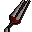

Wolfbane

| Config name | dagger_wolfbane |
| Item id | 2952 |
| Value | 300 gp |
| Weight | 1lb |
| Members | Yes |
| Tradeable | No |
| Stackable | No |
| Equip slot | righthand |
| Options | Wield |
| Category | weapon_stab |
| Defined in | scripts/quests/quest_priestperil/configs/priestperil.obj |
| Equipment stats | Stab att 11, Slash att 5, Crush att -4, Magic att 1, Magic def 1, Strength 10, Prayer 5 |
Wolfbane
A silver dagger that can prevent werewolves changing form.
Quests
Referenced in scripts
scripts/areas/area_canifis/scripts/canafis_citizen.rs2scripts/areas/area_mausoleum/scripts/drezel.rs2scripts/quests/quest_priestperil/scripts/priestperil.rs2